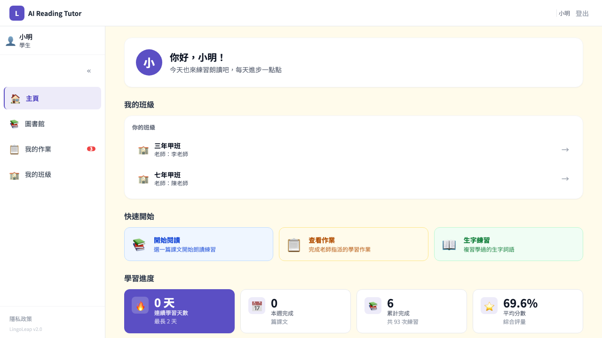
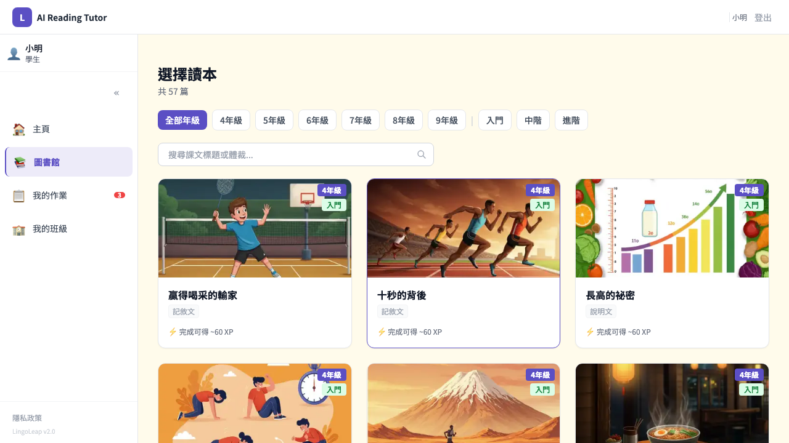
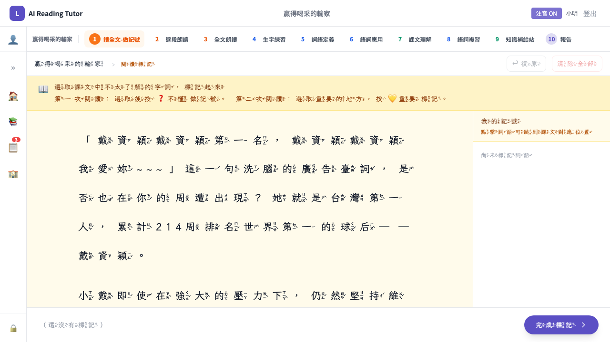
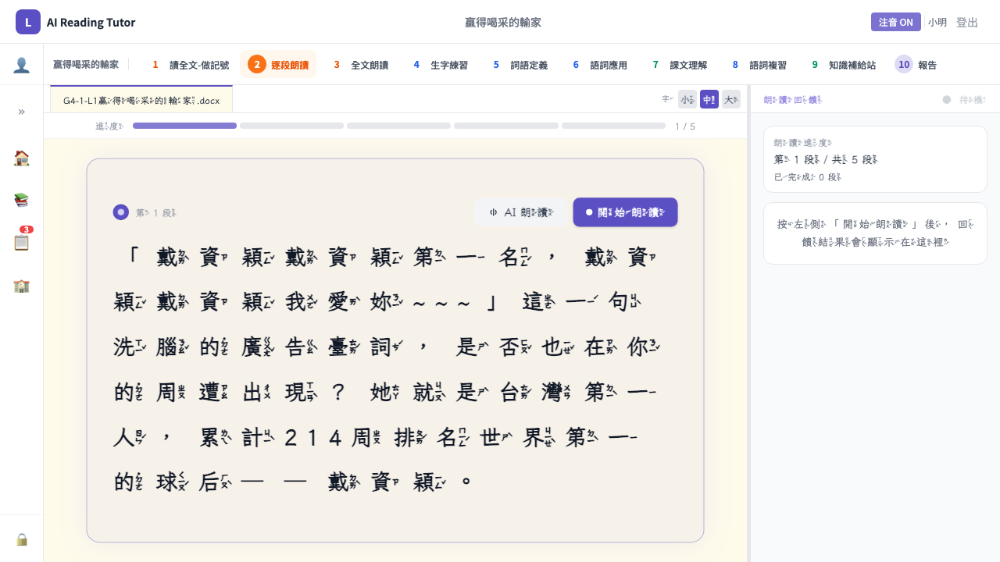
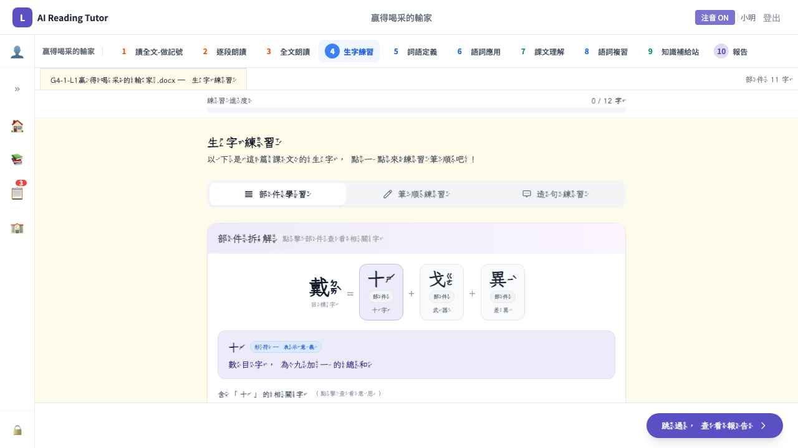
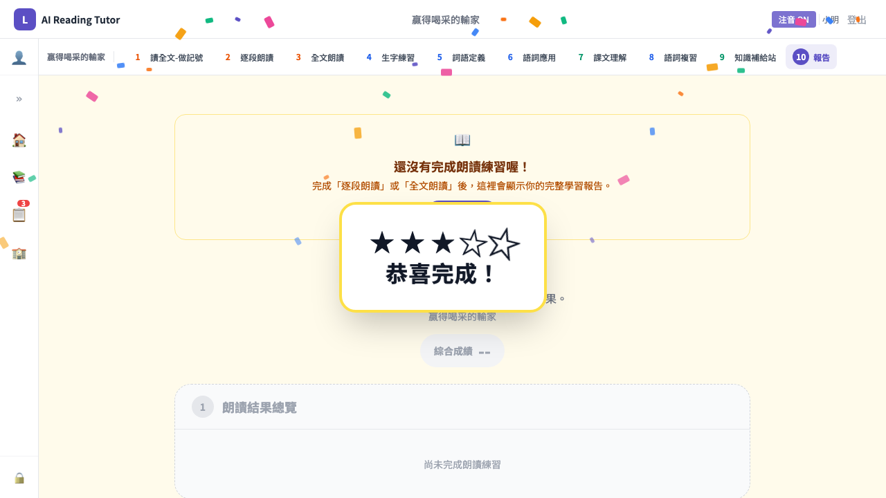
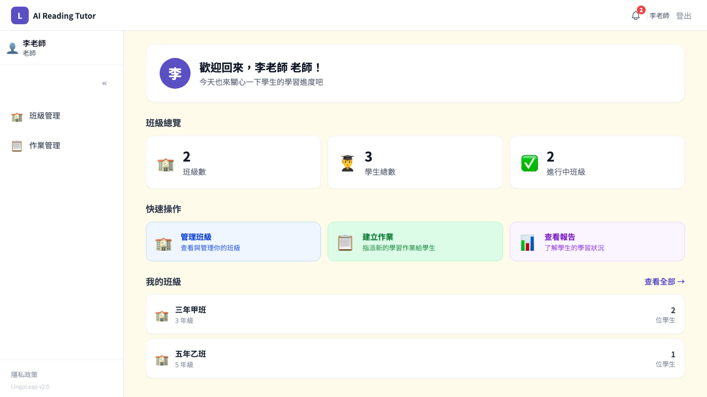
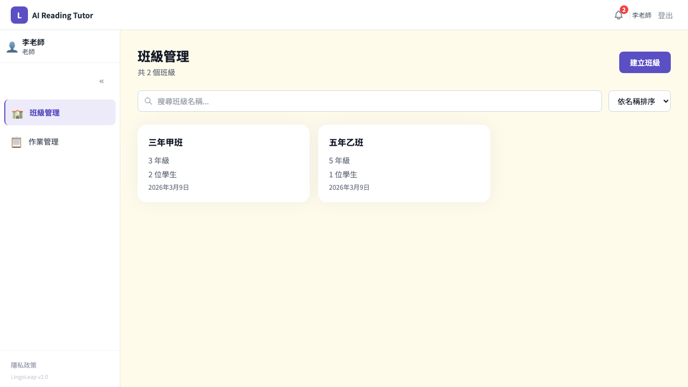

LingoLeap 朗朗上口
AI 驅動的國語文閱讀學習平台
完整平台說明書台灣的閱讀教育正面臨三重結構性困境，這不是個別教師能解決的問題，需要系統性的技術介入
馬太效應（Matthew Effect）
早期識字困難若未解決，三年級後孩子無法透過閱讀獲取知識，學習落差像滾雪球般擴大。一、二年級是介入的黃金期
城鄉差距
偏鄉學生中 17% 低於基本識字水準（都市僅 8%），城鄉差距達 6 年學習進度。偏鄉家庭無法提供課後學習支援
師資不足
一班 25-30 人，逐一聽讀需 60 分鐘。偏鄉教師流動率高，一位教師常需跨年級教學，無法給予每位學生充分回饋
現有工具的不足
- 市面上工具以「測驗」為主，缺乏即時朗讀回饋
- 沒有蘇格拉底式 AI 對話來引導理解
- 缺乏符合閱讀科學的教學設計
- 沒有個別化學習路徑推薦
曾世杰教授的閱讀方程式
曾世杰教授（國立臺東大學特殊教育學系）是台灣閱讀科學研究的先驅，曾任臺東大學副校長、台灣學障學會理事長。他的核心觀點：
雙缺陷假說（Double Deficit Hypothesis）
讀寫困難根源於心理語言學的處理問題：
| 類型 | 缺陷 | 表現 | 介入方法 |
|---|---|---|---|
| 單純聲韻缺陷 | 拼讀困難 | 注音學不會 | 注音卡逐音拼讀 + 形音聯結，每天 10-15 分鐘 |
| 單純唸名缺陷 | 流暢性不足 | 讀得慢 | 計時閱讀練習，每天 15-20 分鐘 |
| 雙重缺陷 | 兩者兼具 | 最嚴重 | 兩種方法同時介入 |
Science of Reading 核心原則
部件教學法
教導孩子拆解國字結構。例如：「清」= 水部（與水有關）+ 青聲（發音線索）。建立字感，讓孩子有「預測」陌生字的能力
聲韻覺識
對語音內部結構的覺知能力。透過玩聲音（拼音、拆音、換音）來強化大腦對文字聲音的敏感度。注音符號是預防閱讀困難的基石
流暢朗讀
識字自動化 = 不需一字一頓。追蹤「語速 × 正確率」，透過重複朗讀提升自動化程度
針對性練習
曾教授明確反對無效罰抄。對於讀寫困難者，機械式重複抄寫只會帶來挫折，應只練錯的字，用多感官與部件教學
將閱讀科學的教學方法轉化為可規模化的數位工具
核心理念
溫暖但堅定的 AI 助教
不是冷冰冰的測驗機器。AI 會鼓勵學生、引導思考，但堅持正確標準不放水
科學 × 技術
每項功能都對應具體的教學法。不是技術秀，是讓科學方法可規模化
教師為核心
AI 代勞重複性工作（聽讀、比對、追蹤），教師專注在最有價值的教學決策
數據驅動
客觀的數字取代主觀感覺。學習進步可視化，讓教師、家長、學生都看得到成長
目標用戶
- 學生：國小高年級到國中生，已進入「讀而學」（read to learn）階段
- 教師：國小國語文教師，特別是偏鄉、學習扶助計畫的教師
- 家長：可透過家長連結查看孩子的學習狀況
平台實際畫面


學生選擇課文後，依序進入以下 10 個學習步驟。每一步都有明確的教學目標和對應的教學法：
學生閱讀完整課文，可以在文字上做標記、畫重點。系統提供課文背景介紹、作者生平，TTS 口語導讀讓學生建立「先行組織者」
教學法：先行組織者（Advance Organizer）— 讀長篇前先讓大腦有「地圖」
學生一段一段朗讀課文，AI 語音辨識即時比對。同音自動修正（減少 STT 誤差造成的挫折），分級鼓勵：80% 以上大力稱讚，60-80% 鼓勵繼續，低於 60% 請再讀一次
系統即時顯示 inline diff（紅色刪除、綠色正確），讓學生清楚看到哪裡讀錯
教學法：流暢朗讀 + 即時回饋 + 溫暖但堅定的鷹架
逐段練習後，學生挑戰完整課文朗讀。系統計算 CPM（每分鐘字數）和正確率，與逐段朗讀比較，追蹤進步幅度
教學法：重複朗讀（Repeated Reading）— 透過從部分到整體的練習提升識字自動化
針對課文生字進行多面向學習：部首部件拆解（例：「清」= 氵+ 青）、筆順動畫示範、手寫練習、注音標註。系統會優先練習學生在朗讀中讀錯的字
教學法：部件教學法 + 針對性練習 — 只練錯的字，避免無效罰抄
將課文生詞與其定義進行配對，強化字義理解。從「選」的方式開始，降低認知負荷
教學法：字形-字音-字義三角聯結
學生在情境中運用所學詞彙，AI 引導造句練習。從理解層次提升到應用層次
教學法：Bloom 認知層次 — 從記憶理解到應用分析
AI 扮演蘇格拉底式助教，用 5 題 3 階段提問引導學生思考課文內容。鷹架逐步移除：第一階段給提示，第二階段減少提示，第三階段學生獨立思考
AI 判定學生是否真正理解（understood = true/false），不會在錯誤時自動放行。配有 circuit breaker：連續 3 次 AI 錯誤 → 停止服務，不傷害學生
教學法：蘇格拉底對話法 + 鷹架理論（Scaffolding）
透過遊戲化的方式（如字詞搜尋）複習本課所有生詞，強化記憶留存。間隔重複效果優於集中練習
教學法：間隔重複（Spaced Repetition）+ 遊戲化學習
根據課文主題提供延伸知識內容，連結課文學習與現實世界。擴展學生的背景知識庫
教學法：背景知識建構 — 閱讀方程式的另一半
朗朗上口六環節診斷報告，涵蓋：朗讀流暢度、識字正確率、課文理解、生字掌握、學習投入度、整體建議。教師和學生都能看到，數據可跨課文追蹤
教學法：形成性評量（Formative Assessment）— 持續回饋而非一次性考試
學習流程實際畫面





以下表格詳列每項教學法在 LingoLeap 中的具體實踐方式：
| 教學法 / 原則 | 來源 | LingoLeap 實踐 | 對應步驟 |
|---|---|---|---|
| 閱讀方程式 | 曾世杰 | 前半流程強化解碼（朗讀、生字），後半流程建構理解（蘇格拉底對話、知識補給站） | 全流程架構 |
| 部件教學法 | 曾世杰 | 生字模組拆解部首、部件。例：「清」= 氵（水部，與水有關）+ 青（聲符）。建立字感與陌生字預測能力 | 生字練習 |
| 聲韻覺識 | 曾世杰 雙缺陷假說 |
注音符號可隨時開關、聽寫練習強化聲音-文字連結、拼讀練習 | 生字練習 聽寫 |
| 流暢朗讀 | 曾世杰 Science of Reading |
AI 語音辨識即時比對 → CPM（每分鐘字數）+ 正確率。追蹤進步曲線，跨課文比較 | 逐段朗讀 全文朗讀 |
| 重複朗讀 | Repeated Reading | 先逐段練習，再全文朗讀。比較前後差異，用數據證明重複練習的效果 | 逐段朗讀 全文朗讀 |
| 先行組織者 | Ausubel | 課文背景介紹、作者生平、TTS 口語導讀，讓大腦先有「地圖」再閱讀 | 讀全文做記號 |
| 蘇格拉底對話法 | Socratic Method | AI 用 5 題 3 階段引導式提問，鷹架逐步移除。不直接給答案，引導學生自主推論 | 課文理解 |
| 鷹架理論 | Vygotsky ZPD |
蘇格拉底對話三階段：有鷹架 → 減少鷹架 → 獨立思考。朗讀鼓勵也分級 | 課文理解 全流程 |
| 針對性練習 | 曾世杰 | 系統自動彙整讀錯的字詞，只針對個人錯誤進行練習。反對無效罰抄 | 生字練習 語詞複習 |
| 間隔重複 | Spaced Repetition | 語詞複習步驟以遊戲化方式重新檢視已學字詞，強化長期記憶 | 語詞複習 |
| 形成性評量 | Formative Assessment | 六環節診斷報告持續回饋，不是一次性考試。教師可即時掌握學習狀況 | 診斷報告 |
| 早期介入 | 曾世杰 RTI Model |
學習預警系統：超過 7 天沒進展 → 自動通知教師。不等鑑定報告就介入 | 教師端 |
| 溫暖但堅定 | 平台設計理念 | AI 語氣設計：正確時大力稱讚，錯誤時鼓勵再試，但不降低標準。保護學習自尊 | 全流程 |
| 背景知識建構 | 閱讀方程式 | 知識補給站提供課文主題的延伸知識，連結課堂學習與真實世界 | 知識補給站 |
平台收錄 57 篇課文，每篇都配有特定的閱讀策略。這些策略不是隨機分配，而是呈現明確的遞進關係 — 同一策略在不同課文中由淺到深，鷹架逐步移除
以下是從課文 YAML 資料中萃取的 10 條技能線：
學生可能缺乏學習動機與信心，遊戲化系統提供即時正增強，讓學習本身變得有趣：
經驗值（XP）
完成每個步驟獲得 XP，累積升等
等級系統
從初學者到閱讀大師，等級可見於個人資料
成就徽章
特定里程碑解鎖徽章，如「連續 7 天學習」「完成 10 篇課文」
連續天數
追蹤連續學習天數（Streak），激勵每日練習
排行榜
班級內排行，適度的同儕激勵
學習路徑視覺化 實驗中
10 步學習流程不再是枯燥的 todo list，而是提供多種佈局模式讓學習像冒險旅程（目前實驗階段，正在收集學生使用數據）：
蛇形路徑（Path）
類似 Duolingo 的蛇形路徑設計，學生沿著路徑前進，每個節點是一個學習步驟。最有趣的第一印象
三階段分組（Grouped）
將 10 步分為「閱讀」「練習」「理解」三個階段，用 accordion 收合，認知結構更清楚
主題化（Theming）
每篇課文可配不同主題（森林、太空、城堡、運動、古典、生活），只改背景色、圖示、進度條，學生覺得「完全不同」
LingoLeap 不只是學生工具，更是教師的教學助手：
班級管理
- 建立班級、CSV 批次匯入學生
- 每個班級獨立管理
- 學校 → 班級 → 學生的層級結構
作業指派
- 從 57 篇課文中選擇指派
- 設定截止日期
- 可指定特定步驟
學生進度追蹤
- 即時查看每位學生的完成度
- 朗讀流暢度趨勢圖（CPM 曲線）
- 錯字詞熱力圖
- 跨課文學習模式分析
學習預警
- 超過 7 天沒有學習進展 → 自動通知
- 預測學習困難（規則引擎）
- AI 個別化學習路徑推薦
教師端實際畫面


LingoLeap 的核心價值來自三項 AI 技術的深度整合：
Gemini 2.5 Flash
Google 最新大型語言模型，負責蘇格拉底式對話引導、閱讀理解評估、學習診斷報告生成，以及個別化學習路徑推薦
Azure TTS 語音合成
採用 zh-TW HsiaoChen Neural 語音，48kHz 高品質中文自然語音，提供課文朗讀示範與聽力練習
語音辨識
即時朗讀評估引擎，自動計算 CPM（每分鐘字數）與正確率，搭配同音自動修正算法降低辨識誤差
PIRLS 是什麼？
Progress in International Reading Literacy Study
促進國際閱讀素養研究
- 誰辦的：IEA（國際教育成就評量協會）
- 測誰：全球四年級學生（約 9-10 歲）
- 多久一次：每 5 年（2006, 2011, 2016, 2021）
- 台灣：2006 年開始參與，師大主持
- 四個歷程：直接提取→直接推論→詮釋整合→比較評估
PISA 是什麼？
Programme for International Student Assessment
國際學生能力評量計畫
- 誰辦的：OECD（經濟合作暨發展組織）
- 測誰：全球 15 歲學生
- 多久一次：每 3 年（2018, 2022, 2025）
- 台灣：2006 年開始，2022 年第 5 名（歷史最佳 515 分）
- 三個歷程：擷取與檢索→統整與解讀→省思與評鑑
兩者的關係
PIRLS 測國小（LingoLeap 的目標年齡層），PISA 測國中。兩者的閱讀歷程分類高度重疊。台灣的老師幾乎都知道這兩個評量，柯華葳教授的「課文本位閱讀理解教學」就是對標 PIRLS 設計的
LingoLeap × PIRLS / PISA 對應表
| 評量歷程 | 定義 | LingoLeap 對應 | 覆蓋狀態 |
|---|---|---|---|
| 擷取與檢索 PIRLS 歷程 1 PISA 歷程 1 評量比重 20% |
在文本中找到明確陳述的特定資訊。例：「文章裡說主角幾歲？」 | ReadingAnnotation 標記重點 推論人物特質策略（L08-L11）找文本線索 推論指稱詞（L05） |
✓ 覆蓋 |
| 統整與解讀 PIRLS 歷程 2-3 PISA 歷程 2 評量比重 60% |
理解文本主旨、推論隱含意義、辨識文本結構。例：「作者為什麼要這樣寫？」 | ComprehensionChat 蘇格拉底式 AI 對話（5 題 3 階段追問） 推論主旨策略（L15-L17） 說明文結構策略（L13, L18-L20） 用表格整理訊息（L29-L31） |
✓ 強覆蓋 |
| 省思與評鑑 PIRLS 歷程 4 PISA 歷程 3 評量比重 20% |
連結文本外知識、批判評估作者觀點、辨別事實與意見。例：「你同意作者的看法嗎？為什麼？」 | PERT 論證法 — 主張、原因、舉例、結論（L32） 4F 反思法 — 事實、感受、反思、行動（L23, L33） 辨別網路訊息真偽（L39） 誘餌式新聞標題辨識（L40） 思辨超能力（L41） 假新聞思辨（L48） 科學方法說服他人（L49） 比較不同作者觀點（L58） 共 8 篇課文直接對應 |
✓ 覆蓋 |
| 互動文本導航 PISA 2018 新增 |
在超連結、搜尋結果頁、論壇討論串、多來源文本中導航找資訊。指文本本身的結構是互動的，不是學習工具有互動功能 | 目前課文為線性單篇設計。數位素養策略（L39-L48）教的是辨別方法，但學生不是在互動文本環境裡實際操作導航 | 未覆蓋 |
| 朗讀流暢度 非 PIRLS/PISA 但閱讀科學核心 |
識字解碼的自動化程度，是閱讀理解的前提條件。曾世杰教授：「閱讀能力 = 識字解碼 × 背景知識」 | LiveTutor AI 即時朗讀回饋 CPM（每分鐘正確字數）追蹤 FullReading 全文朗讀評估 朗讀進步曲線 |
獨特優勢 |
台灣 PISA 數據：2022 年閱讀素養第 5 名（515 分，歷史最佳），但 2018 年最弱的歷程是「擷取與檢索」。城鄉差距約 40 分（近兩年學力差距），低成就學生停滯是主要隱憂——這正是 LingoLeap 要解決的問題
| 功能維度 | LingoLeap 朗朗上口 |
學國語 方大哥原版 iOS |
學習吧 LearnMode |
均一 教育平台 |
數位讀寫網 | PaGamO 素養 |
PRIORI 學習扶助 |
|---|---|---|---|---|---|---|---|
| AI 朗讀即時回饋 | ✓ | ✕ | Δ | ✕ | ✕ | ✕ | ✕ |
| 蘇格拉底式 AI 對話 | ✓ | ✕ | ✕ | Δ | ✕ | ✕ | ✕ |
| 部件教學 + 筆順 | ✓ | ✓ | ✕ | ✕ | Δ | ✕ | ✕ |
| 注音拼讀練習 | ✓ | ✓ | ✕ | ✕ | Δ | ✕ | ✕ |
| 個別化學習路徑 | ✓ | ✕ | Δ | ✓ | ✕ | ✕ | Δ |
| 朗讀流暢度數據（CPM） | ✓ | ✕ | Δ | ✕ | ✕ | ✕ | ✕ |
| 閱讀策略遞進教學 | ✓ | ✕ | ✕ | ✕ | Δ | ✕ | ✕ |
| 遊戲化激勵（XP/徽章） | ✓ | ✕ | Δ | ✓ | ✕ | ✓ | ✕ |
| 教師端學習預警 | ✓ | ✕ | Δ | ✓ | ✕ | Δ | Δ |
| 跨課文學習分析 | ✓ | ✕ | ✕ | ✕ | ✕ | ✕ | ✕ |
| 國語文閱讀專用 | ✓ | ✓ | Δ | ✕ | ✓ | Δ | ✓ |
| 教學法科學根據 | 曾世杰教授 閱讀科學 |
識字教學 筆順+注音 |
通用 學習平台 |
精熟學習 可汗模式 |
識字教學 為主 |
遊戲化 為主 |
篩選 追蹤 |
| 核心定位 | AI 閱讀教學 | 生字教學 LingoLeap 前身 |
綜合學習 平台 |
跨科自學 平台 |
識字 補救 |
遊戲化 測驗 |
篩選 評量 |
✓ 已實作 Δ 部分支援 ✕ 無此功能
技能樹視覺化
將 10 條閱讀策略技能線視覺化呈現，讓學生看到自己在每條技能線上的程度，系統自動推薦下一篇適合的課文
Per-Story 主題化
每篇課文配專屬視覺主題（運動課文用紅色運動風、自然課文用綠色森林風），57 篇課文自動從內容推導主題
遊戲化互動機制
星等系統（每步 1-3 星）、收集機制（碎片拼成成就圖）、計時挑戰模式。基於學生數據決定哪些機制最有效
聲韻覺識訓練模組
基於曾教授的研究，加入刪音素測驗、注音拼讀教學、快速命名（RAN）篩檢等目前平台尚缺的功能
政府合作推廣
申請列入學習扶助計畫推薦工具、進入閱讀素養提升計畫學校試用，透過 CoLab 進入偏鄉學校